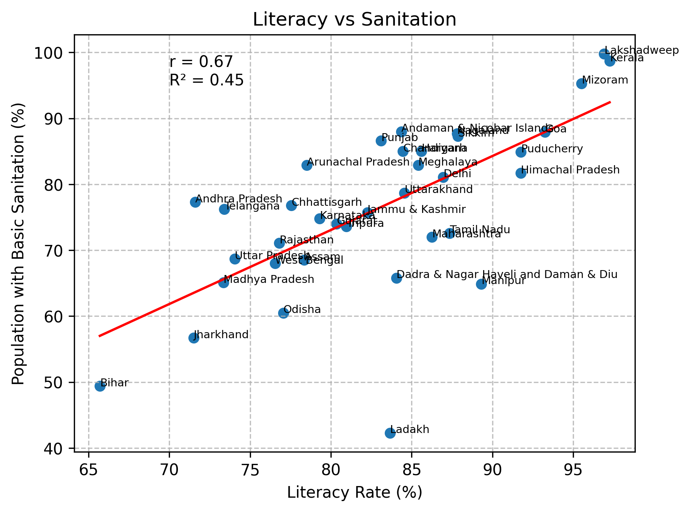
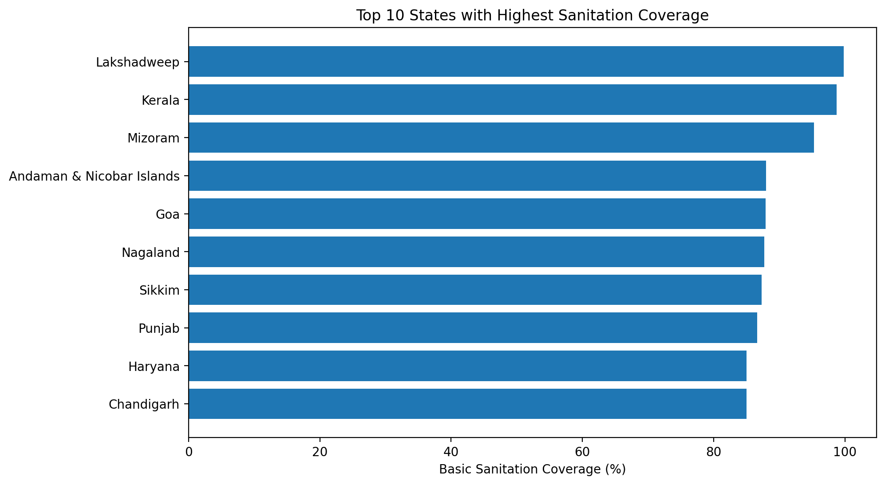
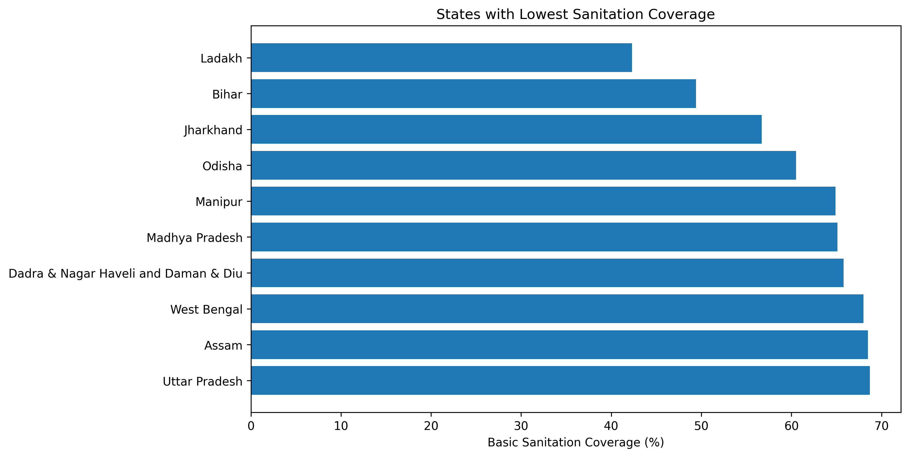

Project Overview
Welcome to our analytical dashboard. The core focus of this project is to investigate and uncover the link between primary education levels measured through literacy rates and vital public health infrastructure, represented by access to basic sanitation services.
Leveraging official state-level datasets, we delve deep into to how these two crucial metrics influence each other to give a clearer picture of regional development trends in India.
Correlation Analysis
Pearson Correlation (r)
Positive Correlation
Coefficient of Determination (R²)
Variance Explained
Our analysis indicates a moderately strong positive correlation between literacy rates and sanitation access. In essence, states with higher educational advancement demonstrate an increased likelihood of better basic sanitation coverage. However, since R² is 0.45, about 55% of the variation is explained by other factors, emphasizing the complexity of regional development.

Scatter Plot visualizing Literacy Rate vs Sanitation Coverage across states
State Rankings: Sanitation Coverage
To better understand the extremes of the spectrum, we have charted the best and worst performing states in terms of basic sanitation coverage.

Top 10 States with Highest Sanitation Coverage

Top 10 States with Lowest Sanitation Coverage
Key Findings
-
📊
Strong Associated Trends: States boasting higher literacy rates generally showcase significantly better sanitation coverage, highlighting the interconnectedness of education and health.
-
🌟
Regional Leaders: Southern states historically perform robustly in both domains, acting as benchmarks for effective public policy and community awareness.
-
🧭
Socioeconomic Variances: Some states inevitably deviate from the main trend cluster. These outliers emphasize that geographical challenges and varying socioeconomic policies also play a substantial role.
Interactive Geospatial Map
Navigate through the interactive Folium map below to geographically analyze sanitation and literacy metrics statewide.
Official Data Source
Below is the official report providing the underlying datasets used for this project's analysis.